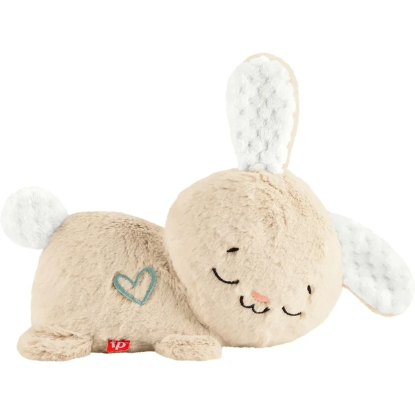
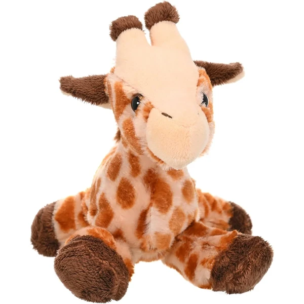
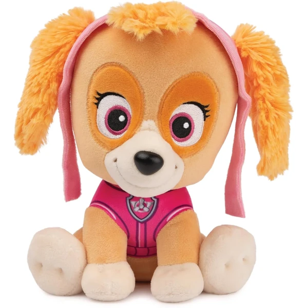
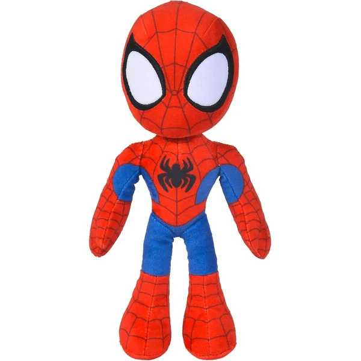
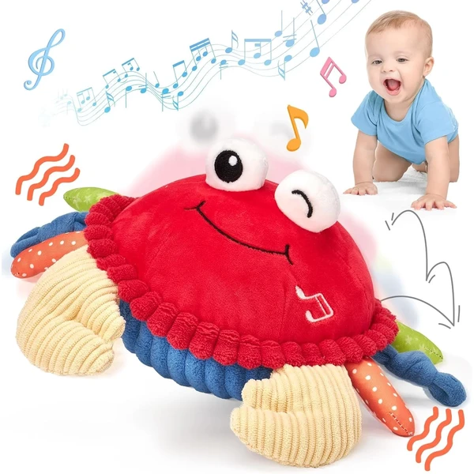

Conejito Hora de Dormir Fisher-Price
Un peluche con movimientos rítmicos de cabeza, luz suave y cinco sonidos relajantes (ronquidos, respiración, ruido blanco...) pensado para calmar antes de dormir.
⭐ ¿Por qué nos gusta?
- ✔ Cinco sonidos relajantes personalizables.
- ✔ Movimiento de cabeza y luz ajustables.
- ✔ La parte de peluche se puede lavar a máquina.
💬 Lo que más destacan las familias
Muchos padres coinciden en que los sonidos relajantes ayudan bastante en la rutina de antes de dormir, sobre todo en las noches más difíciles. También se valora que la parte de peluche se pueda lavar, algo de agradecer con el uso diario.
Ver en Amazon

Peluche jirafa Hug'ems Wild Republic
Un peluche pequeño y blandito de 18 cm con forma de jirafa, pensado como primer compañero de juego.
⭐ ¿Por qué nos gusta?
- ✔ Tamaño pequeño, fácil de abrazar y llevar.
- ✔ Material blandito y suave.
- ✔ Diseño sencillo y atemporal.
💬 Lo que más destacan las familias
Lo que más suele gustar es lo blandito y manejable que resulta para que un bebé lo abrace o lo lleve a todas partes. Por su tamaño compacto, muchos lo eligen precisamente como ese primer peluche que acompaña a todas horas.
Ver en Amazon

Peluche Skye Patrulla Canina
Un peluche clásico de 23 cm de Skye, uno de los personajes de la Patrulla Canina, de felpa suave y fácil de limpiar.
⭐ ¿Por qué nos gusta?
- ✔ Felpa suave y agradable al tacto.
- ✔ Tamaño manejable de 23 cm.
- ✔ Superficie lavable.
💬 Lo que más destacan las familias
Entre los comentarios más habituales aparece el cariño inmediato que le tienen los niños que ya conocen a los personajes de la serie. La felpa suave y el tamaño manejable también se mencionan como puntos a favor.
Ver en Amazon

Peluche Spidey Disney
Un peluche de 25 cm del personaje Spidey con ojos que brillan en la oscuridad, pensado para acompañar durante el sueño.
⭐ ¿Por qué nos gusta?
- ✔ Ojos que brillan en la oscuridad.
- ✔ Tela suave con cierta consistencia.
- ✔ Apto desde los primeros meses.
💬 Lo que más destacan las familias
No es raro encontrar comentarios sobre lo mucho que llama la atención el detalle de los ojos que brillan en la oscuridad, sobre todo a la hora de dormir. La tela suave con algo de consistencia también gusta para que se sostenga bien entre los brazos.
Ver en Amazon

Abeja bailarina musical hahaland
Un peluche con forma de abeja que canta, salta y se mueve al ritmo de veinte melodías, con un modo de grabación que repite lo que dice el bebé. Se recarga por USB, sin pilas.
⭐ ¿Por qué nos gusta?
- ✔ Canta y salta al ritmo de veinte melodías.
- ✔ Modo de grabación de voz.
- ✔ Recargable por USB, sin pilas.
💬 Lo que más destacan las familias
Los compradores valoran especialmente el modo de grabación, que repite lo que dice el bebé y suele arrancarle más de una carcajada. Que se mueva y cante al ritmo de la música también ayuda a que no pierda el interés con el paso de los días.
Ver en Amazon

Cangrejo bailarín musical hahaland
Un peluche con forma de cangrejo que salta y suena al tocarlo, con 48 melodías y un modo de grabación que repite lo que dice el bebé. Pensado para animar el gateo y estimular el oído.
⭐ ¿Por qué nos gusta?
- ✔ Salta y suena al tocarlo, anima a gatear.
- ✔ 48 melodías y modo de grabación de voz.
- ✔ Recargable por USB, sin pilas.
💬 Lo que más destacan las familias
Un detalle que aparece una y otra vez es que el movimiento al tocarlo anima a los bebés a acercarse gateando para activarlo de nuevo. El modo de grabación también sorprende, porque repetir su propia voz suele hacerles mucha gracia.
Ver en Amazon